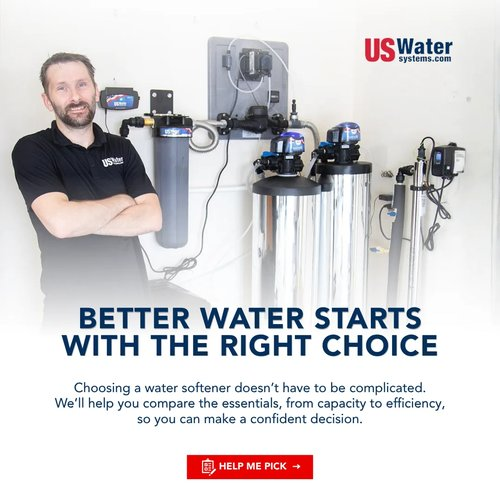
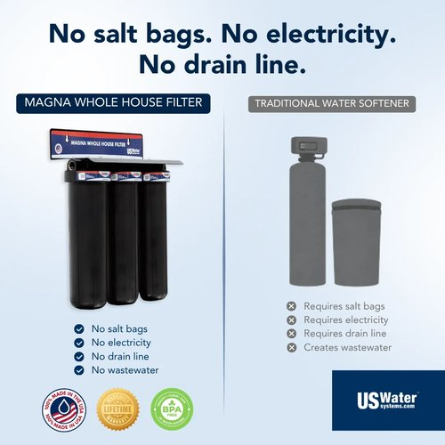
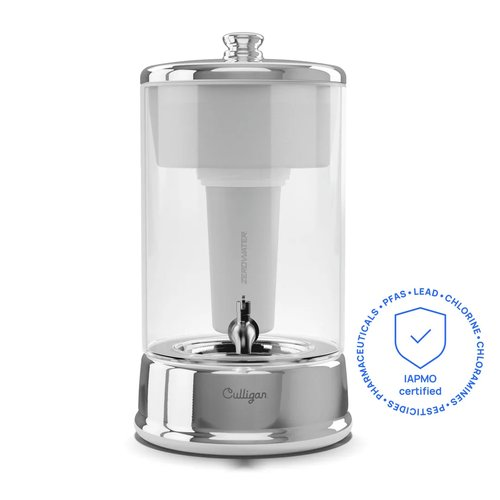
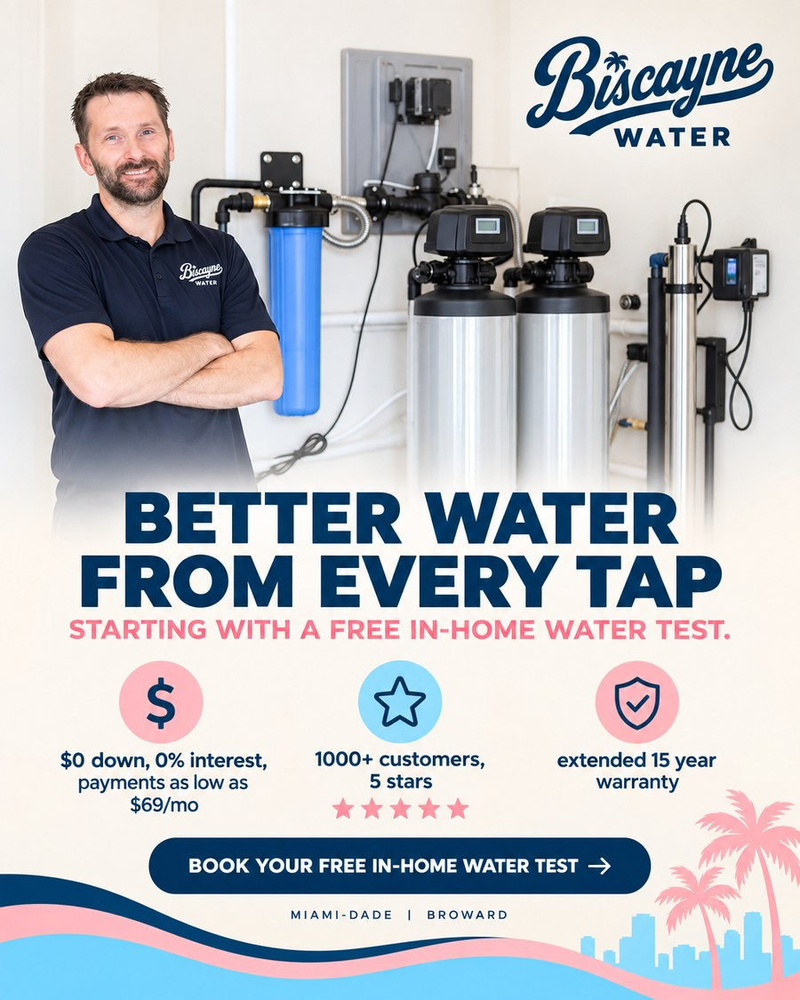
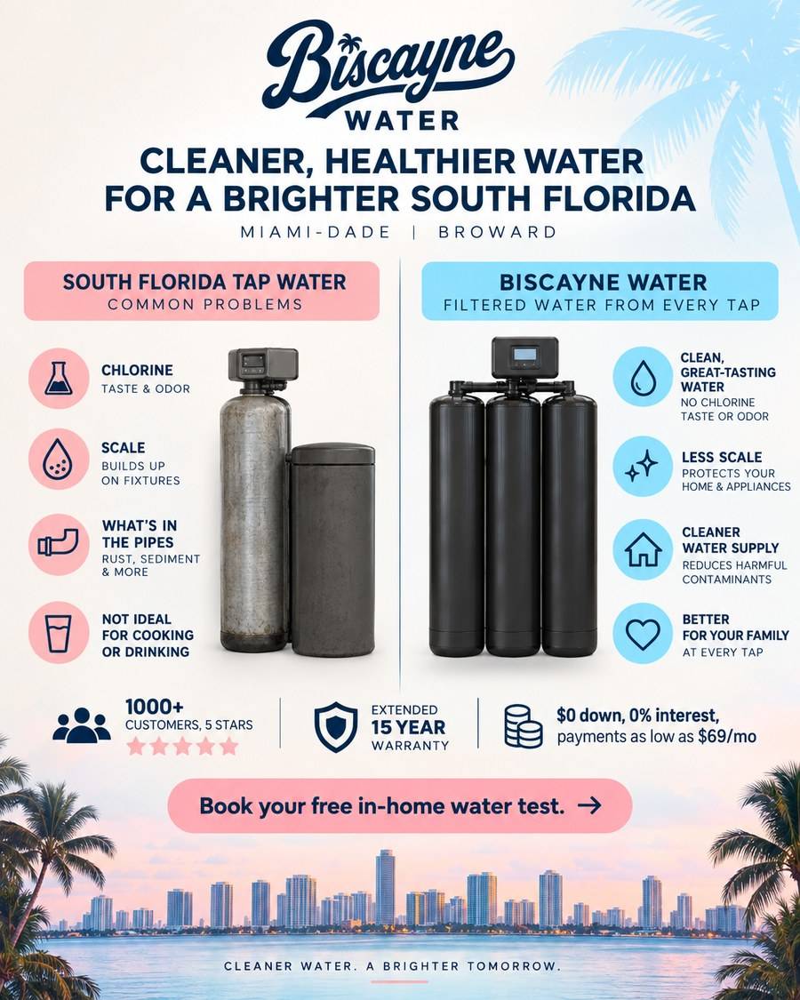
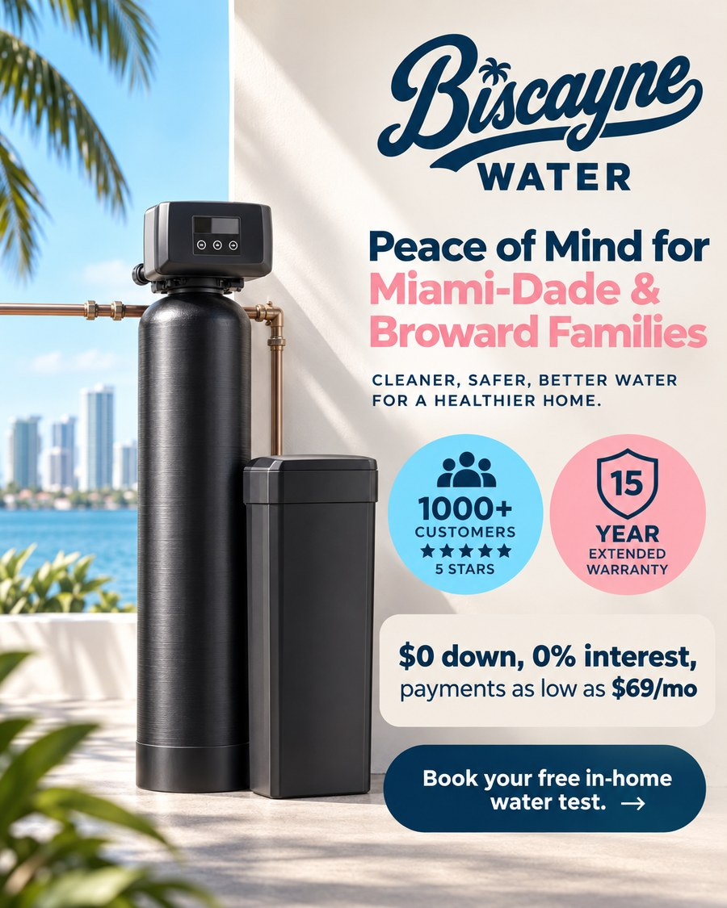

Same searches, same competitor checks, and 3 real Biscayne Water statics generated inside Konvert. No ads were published. Nothing here is a guess: every number came from a live run on this date.
Keep both. Do not drop Foreplay before the Workflow trial ends around Nov 29. Do not drop Konvert in its 7-day refund window.
Each category is scored 1–10 from the tests below. “Winner” is the higher score only. Creation is scored 1 for Foreplay because it has no generator, not because the API failed.
| Category | Konvert | Foreplay | Winner |
|---|---|---|---|
| Search coverage | 5 | 8 | Foreplay |
| Long-running / winning ads | 7 | 8 | Foreplay |
| Top-10 relevance | 6 | 7 | Foreplay |
| Filters | 6 | 8 | Foreplay |
| Freshness | 7 | 8 | Foreplay |
| Competitor tracking | 4 | 7 | Foreplay |
| Static ad creation | 8 | 1 | Konvert |
| Platform coverage | 5 | 8 | Foreplay |
| Tool / API reliability | 7 | 8 | Foreplay |
| Average, all categories | 6.1 | 7.0 | Foreplay |
| Research only (no creation) | 5.9 | 7.8 | Foreplay |
Neither tool returns a total hit count. “20+” means a full page of 20 with another page available. Foreplay pages were limited to 10 ads each to stay under a 300-credit cap (1 credit per ad). “Live 30+” is Foreplay’s live=true + running_duration_min_days=30 + order=longest_running.
| Query | Konvert (top page) | Foreplay most relevant | Foreplay live 30+ |
|---|---|---|---|
| whole home water filtration | 20+, all on-topic. 17 Complete Home Filtration (AU), 3 Aquasana. All video. 3 live. 9 of 20 ran 30+ days, 0 ran 60+ days on this page. Starts Jul 14–Nov 18, 2026. | 10+, 10/10 on-topic, 7 live. Runtimes 0–10 days. Starts Nov 11–20, 2026. Mix of image and video. | 10+, 10/10 live, all 177–507 days. Filter held. Mix of whole-house filter listings, Local Culligan, and quote ads. |
| water softener | 20+, all image. 14 US Water Systems, plus Afina, APEC, Pure Home 365. 11/20 clearly about softeners. 1 live. 9 ran 30+ days, 8 ran 60+ (longest 141 days). | 10+, 9/10 on-topic, 10 live, all ~1 day old (Nov 21). One off-topic haircare ad slipped in. | 10+, 10/10 live, 192–550 days. Filter held. Includes a relevant long-runner and also India salt tablets plus HVAC bundles that only mention a softener. |
| reverse osmosis | Exact query: 0 ads. Fallback “reverse osmosis water filter” returned 20+ ads, but they were electrolyte drinks (Hyro, Spacegoods), not RO systems. | 10+, 10/10 water-related, 10 live, 0–1 day old. Videos, images, and one DCO. Includes Sans, Waterdrop, and lead-gen ads. | 10+, 10/10 live, 539–654 days. Filter held. Mostly “remove chemicals from your water” videos, plus an Aussie alkaline-water ad. |
| Culligan | 20+, 18 Culligan ZeroWater pitcher ads and 2 US Water Systems ads. 2 live. 4 ran 30+ days, 0 ran 60+ on this page. No Culligan dealership / whole-home page in the brand library. | 10+, 10/10 mention Culligan, 10 live, 1–2 days old. Includes ZeroWater and some near-duplicate creatives. | 10+, 10/10 live DCO, 503–598 days. Includes Culligan, Culligan Winnipeg, Local Culligan, and Culligan ZeroWater. |
| Grüns | 20+ ads. Visible ranks 1–5 and 19–20 were all the Gruns brand. Image ads, starts Jun 1–Oct 28, 2026. One visible long-runner was 116 days. Brand lookup only found “Grüns Kids” for the umlaut spelling; “Gruns” found the main brand (9,663 ads, 265 active). | 10+, 10/10 Grüns, 10 live, all ~1 day old (Nov 21). Black Friday and daily-pack ads. | 10+, 10/10 live DCO, all branded Grüns, 487–599 days. Filter held. |
| Bloom Nutrition | 20+. Visible ranks 1–5 and 19 were Bloom Nutrition greens/protein ads. Rank 20 was a Grüns ad. Brand record description was wrong (it described a coupon app) even though the ads themselves were the real Bloom brand. | 10+, 10/10 mention Bloom, 6 live. Starts Oct 30–Nov 19, 2026. | 10+, 10/10 live, 375–480 days. Filter held. Includes Bloom-branded ads and Target retail ads selling Bloom. |
| Cold Life / Coldlife | Semantic search for “Cold Life” missed the brand. Visible ads were mountaineering, goalkeeper winter gear, and The North Face. “Coldlife” as a brand name returned 0. Brand lookup did find Cold Life (2,034 ads, 186 active). Its longest-running ads go 363 days (vertical cold plunge). | 10+, 10/10 on-topic, 10 live, Nov 20–21, 2026. | 10+, 10/10 live, 197–306 days. Includes “Stop Showering in Toxins,” “Discover The Power Of Cold Plunging,” and Cold Life DCO. Filter held. “Coldlife” as one word returned 0 brands. |
longest_running without live=true did not reliably honor the 30- or 60-day floor. The 30-day and 60-day result sets were the same ads, and some runtimes were under the floor. Same query with live=true honored the floor on all 7 queries.| Brand | Konvert | Foreplay |
|---|---|---|
| Culligan | Only “Culligan ZeroWater” (220 ads, 32 active). This is the pitcher brand, not the dealership network. Longest indexed ads ~51 days and still live. | Main “Culligan” page: 1,028 ads, 213 active (culligannation.com). Also Local Culligan (515 / 146), Culligan UK, France, España. Pulled 10 live 76-day DCO ads from the main page without using a Spyder slot. |
| Kinetico | 0 brands. | Found. Top match: Kinetico Water Systems, 21 ads, 7 active. Other dealer pages have 1–23 ads. |
| RainSoft | 0 brands. | 0 brands for “RainSoft,” “Rainsoft,” and “Rain Soft.” This gap is in both tools. |
A Biscayne Water brand profile was scraped from biscaynewater.com, then updated to the official colors (navy #053659, pink #FAB3B4, sky #78DBFF, cream #EFE8DF) and Montserrat. The scrape captured a logo. The product list was empty, so the model invented equipment. Each static is a 4:5 (1024×1280) remake of a long-running winner, using gpt-image-2.5-sunburst.
Required copy on every ad: never name a system price; “$0 down, 0% interest, payments as low as $69/mo”; “1000+ customers, 5 stars”; “extended 15 year warranty” (never lifetime); Miami-Dade & Broward.






Neither tool generates AI video ads. Konvert image generation is image-only. Both are Meta-heavy in the results I actually received, even though Foreplay’s API lists more platforms.
Foreplay API: every test call returned HTTP 200. No 429 rate limits. 297 credits used, 6,078 of 10,000 remaining in the Nov 22–Dec 22, 2026 cycle. The usage endpoint is free; X-Credits-Remaining was sometimes blank there, but the body had the number. Konvert MCP: all called tools succeeded (scrape, colors, search, brand lookup, top ads, generation). Adding a brand to a scout folder silently stayed at 0. Semantic search can return a confident wrong category (RO → electrolytes; Cold Life → winter apparel). Exact “reverse osmosis” returned an empty set with no error. Caps after this test: gens 3/150 (reset Dec 22, 2026), brand profiles 1/3, tracked brands 0/15. Refund rule is 7 days and under 50% of credits used; this test used 2% of gens.
live=true and a 30-day floor. If Konvert has that brand, pull the creative and remake it there. If Konvert does not have the brand, do not expect search to invent it.Tested Nov 22, 2026, America/New_York, against Konvert Premium and the Foreplay public API. No ads were published, posted, or sent anywhere. This page is a scorecard, not a media plan.